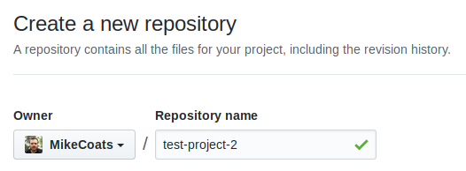

Fork Your Own Repo on GitHub
A common time-saving 'hack' of mine when building 'new-but-related-to-old' projects is to fork an existing code base and use it as the boot-strap for the new project. GitHub, however, does not provide the functionality on their website to fork your own project; you can only fork other people's projects. Here's how to work around that.
- Create the new destination project on GitHub.

- Create a new directory on your local computer to hold the new repository.
~$ mkdir test-project-2
~$ cd test-project-2
~/test-project-2$ git init .
Initialized empty Git repository in /home/mike/test-project-2/.git/- Add the new project as the origin remote and the old project as the upstream remote.
~/test-project-2$ git remote add origin https://github.com/MikeCoats/test-project-2.git
~/test-project-2$ git remote add upstream https://github.com/MikeCoats/test-project-1.git- Pull the code from the upstream project and push it to the origin project.
~/test-project-2 $ git pull upstream master
remote: Enumerating objects: 3, done.remote: Counting objects: 100% (3/3), done.
remote: Total 3 (delta 0), reused 3 (delta 0), pack-reused 0
Unpacking objects: 100% (3/3), done.
From https://github.com/MikeCoats/test-project-1
* branch master -> FETCH_HEAD
* [new branch] master -> upstream/master
~/test-project-2 $ git push origin master
Enumerating objects: 3, done.
Counting objects: 100% (3/3), done.
Writing objects: 100% (3/3), 881 bytes | 881.00 KiB/s, done.
Total 3 (delta 0), reused 0 (delta 0)
To https://github.com/MikeCoats/test-project-2.git
* [new branch] master -> masterCongratulations! You've successfuly forked your own repo on GitHub!
Discussion
If you want to leave a comment or discuss this post, please reply to my tweet below!